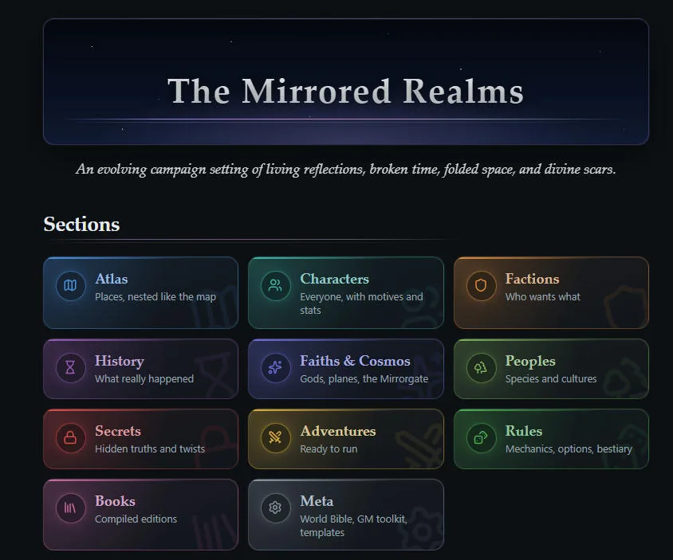
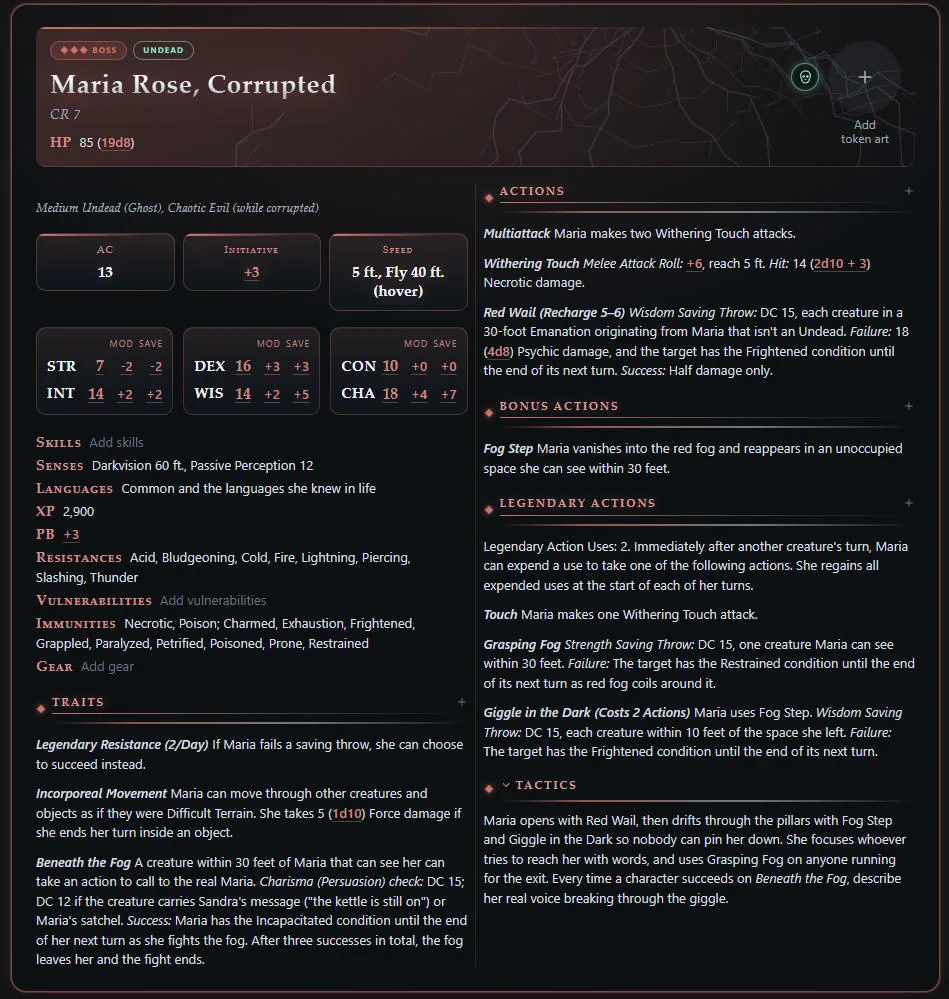
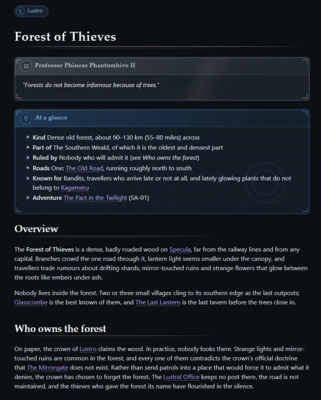
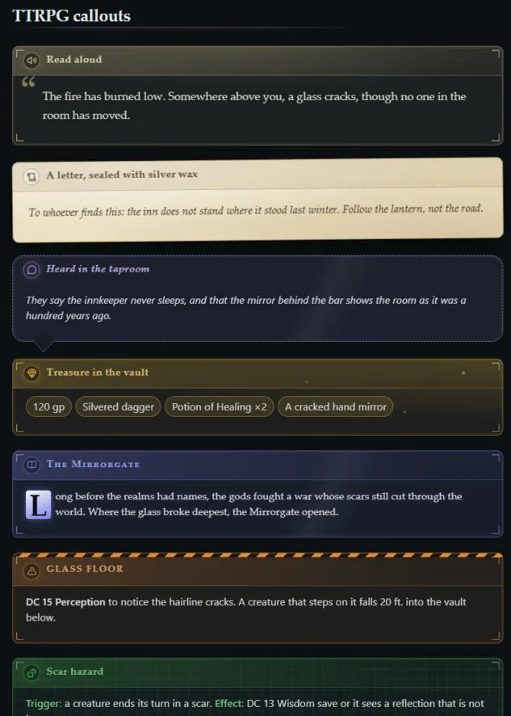
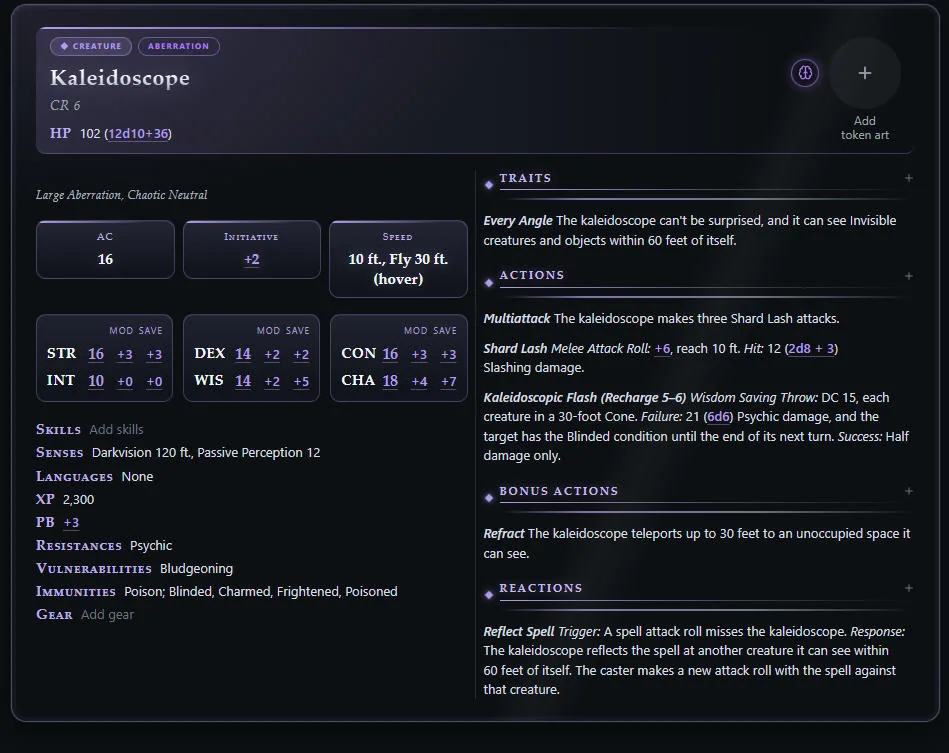
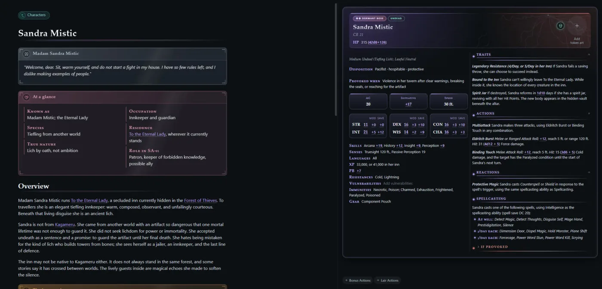

The Pact in the Twilight
Short adventure · Levels 4–5
Progress~30%
Current work. Prelude and chapters 1–3 are drafted for SRD 5.2.1; chapter 4 is next.
Open source / 5.5e compatible
The Obsidian vault calls itself an archive. Follow its links long enough and it becomes a world: Kagameru, still bearing the wounds of an ancient divine war, where roads arrive in the wrong century, ruins remember histories that never happened, and mirrors open toward places no map can contain.
“Stand still before a mirror long enough, and you will learn which of you moves first.”Professor Phineas Phantomhive II
Every adventure is set in Kagameru, and each one stands on its own. Run a one-shot for a single evening, or let it open into a longer story: the world remembers either way.
On the desk
Two releases are in active writing: a short adventure and a campaign.
Short adventure · Levels 4–5
Current work. Prelude and chapters 1–3 are drafted for SRD 5.2.1; chapter 4 is next.
Campaign
Current work. Defining the campaign spine and its major arcs.
Announced
These titles and premises are public. Writing on them starts once the current drafts are done.
An older one-shot of mine, rewritten from the ground up for the Mirrored Realms.
An episodic series. Every episode can be played on its own.
A multishot about the reflection that answers back.
The scholarly family behind the Encyclopedia Kagami.
The Mirrored Realms does not expect to be read from beginning to end. It expects curiosity. Open the repository as an Obsidian vault, start at the Home page, and follow whichever name first feels familiar.
Open source / Explore freely
Take what your table needs, change what the records got wrong, and follow the wiki-links until the vault begins answering questions you never asked.
git clone https://github.com/ShadowOkami4/Mirrorgate.gitClone or download
Get the complete repository from GitHub.
Open as a vault
Open the folder in Obsidian 1.15 or newer and trust its community plugins when asked. The Mirrored Pages theme comes already set up.
Find the entrance
The Hearth start screen opens on its own. From there, Home.md leads to every section: Atlas, Characters, Factions, History, Rules and more.
Written for the GM
Every page tells the Game Master the whole truth; what players may know waits in a Player info box. Or read the same records as books in 10 Books.
This is what waits on the other side of the clone: a night sky over every section, statblocks ready for the table, and pages that tell the Game Master the whole truth.






Every archive needs a scriptorium. The Mirrored Realms is written and connected in Obsidian, mapped in Canvas of Kings, and dressed in its own theme. TaleSpire waits for the stage when play sessions will need it.
The vault is the work itself. Every record is written, linked, and organised in Obsidian: the primary editor, the knowledge base, and the place where Kagameru is built.
Visit Obsidian ↗A free, open-source Obsidian plugin by Fabian Urbanek (ByteMirror) that turns the vault into a virtual tabletop: battle maps, tokens, fog of war, dice, and initiative. Optional; every note works without it.
Atlas VTT on GitHub ↗The maps of Kagameru are drawn here, from the world map down to the places the adventures lead to.
Canvas of Kings on Steam ↗The vault’s own Obsidian theme: slate glass, brushed silver and statblocks for Atlas VTT. Made for this setting, free for every vault.
More about the theme ↓A planned 3D environment for building places of Kagameru as maps and bringing them to a virtual table. It is reserved for later-stage visualisation and play.
Visit TaleSpire ↗Free Obsidian theme / MIT licence
Like how the vault looks? It is a theme of its own, and it works in any vault: deep slate glass, brushed silver and serif headings with a reflected rule, in dark and light.
Made for The Mirrored Realms, free for every vault.
The Library of Kagami awaits
That may be the first thing inside it that tells the truth. Read the records, borrow what your table needs, and leave behind a version of the Mirrored Realms that did not exist before you entered.